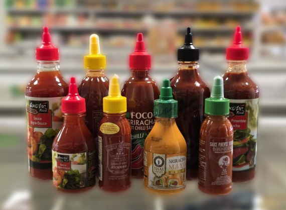

Rayon Sauces
Les produits du rayon sauces les plus achetés

Sauces Sriracha – Sauce piquante thaïlandaise, idéale pour relever vos plats.
Pâtes – De curry, de crevettes, choississez ce qui vous fait plaisir.
Lait de coco – Pour la cuisine, pour le dessert, ainsi que la poudre de saté.
Sauces assaisonnement – Maggie, sauce poisson, sauce huître, sauce soja clair et sombre, tout ce dont vous avez besoin pour cuisiner.
Sauces – De nombreuses sauces à ajouter dans vos plats, comme la sauce nems !
Divers – Glutamate, vin de cuisine (Shaoxing), bouillons divers et oignons frits.